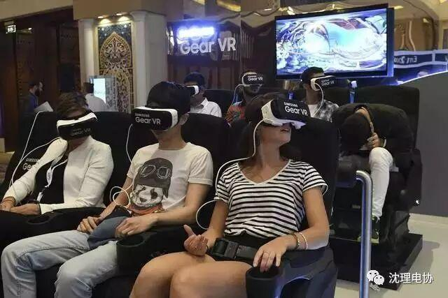
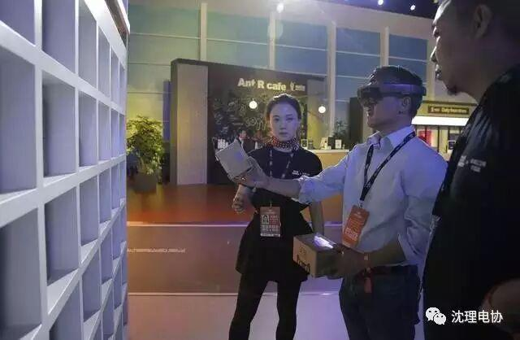
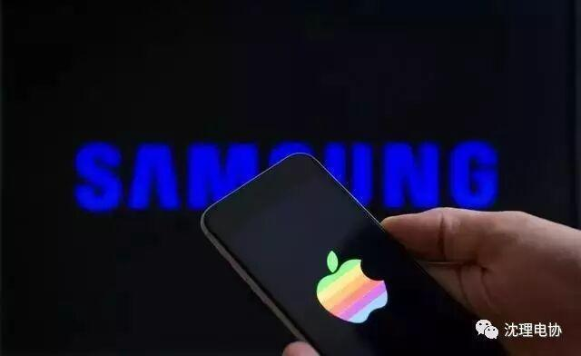
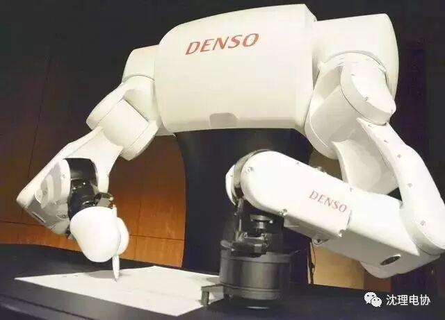
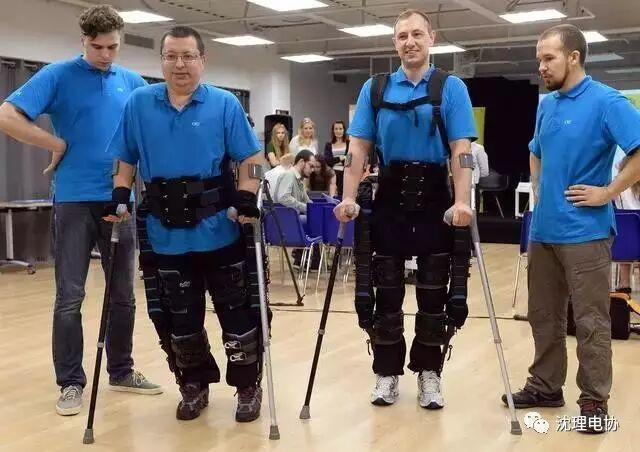
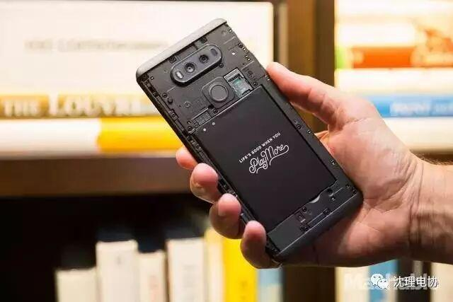
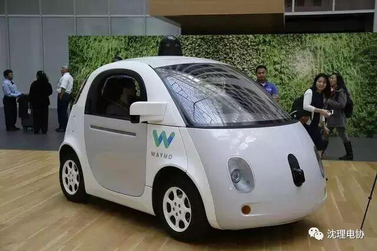
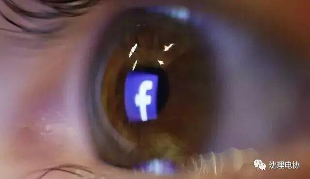
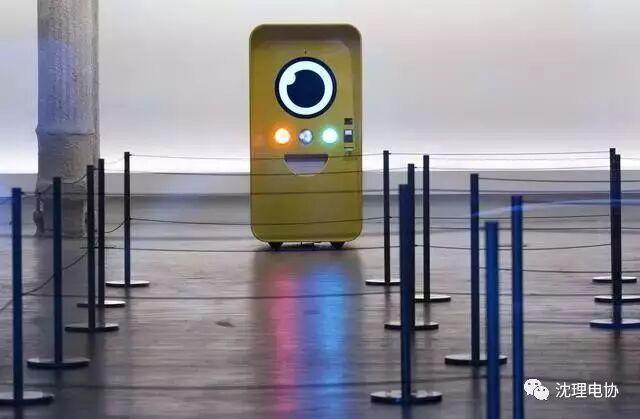
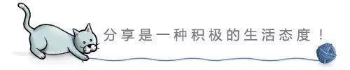

2017年值得关注的11个科技趋势......
当今的时代被科技包围和渗透，我们生活的世界也通过科技粘合在一起。相信2017年将涌现许多创新。其中一些会给我们的生活带来巨大变化，还有的则会悄无声息地融入和改变我们的生活......

虚拟世界
与一年前的预测相符，虚拟现实的确在2016年实现大幅增长，技术也有所进步，曝光率同步增加。但它并没有改变社会。虚拟现实未来一年仍将是最重要的“发展中技术”，而2017年将成为一个转折点，它将从很多人好奇的东西变成实实在在的工具，令原本了无生趣的活动变得趣味十足。

例如，2017年推出的硬件可能会减少，但与现有平台的整合力度将会加强。人们将在2017年通过虚拟现实技术开展社交活动。Facebook已经作出一些重大承诺，并在2016年的F8开发者大会上进行了夺人眼球的演示。如果你和你的Facebook好友都拥有最基本的虚拟现实硬件，Facebook将在新的一年为你提供更加先进的服务。
另外，还应该密切关注消费内容的爆发（包括游戏、电影、电视节目和音乐会），甚至还将诞生更多虚拟现实艺术作品。
增强现实

虽然虚拟现实展翅高飞，但增强现实才是2017年真正的明星。微软的混合现实平台Windows Holographic最近吸引了不少配套硬件，这将为Windows用户带来新的混合现实体验。苹果也将最终进军增强现实领域（可惜不是虚拟现实）。
增强现实明年将超过虚拟现实，因为它可以通过移动设备实现，不必购买额外硬件。最初通过现有手机实现的体验有助于吸引消费者购买新的增强现实眼罩，尤其是当消费者和企业寻找更具沉浸感且能解放双手的增强现实设备时。
增强现实技术可以进一步提升游戏、玩具、工作和零售体验。我们甚至有可能最终见到零售版的Magic Leap。
屏幕技术

2017年，你或许能在新的4K智能手机屏幕上享受很多增强现实和虚拟现实体验。随着高清电视技术的发展曲线在过去几年逐步趋缓（没有人真正在乎曲屏和3D，而大屏根本算不上创新），显示器厂商已经瞄准了全天候陪伴我们的屏幕。
OLED屏幕更薄、更节能。超高清屏幕早在2015年就应用在智能手机上（这都要感谢索尼），但似乎并未全面普及。这种现状将在2017年发生改变。关键问题在于，我们能否在那么小的屏幕上看出高清（1080p）和超高清之间的区别？
这为何会成为2017年的重要技术？应该参照本文的第一条。明年将有越来越多的消费者将智能手机插到虚拟现实眼罩中使用，在眼前放大屏幕时，更高的分辨率将提供更好的显示效果。
此外还有很多关于折叠屏幕的传言。我们知道可卷曲屏幕已经能够实现，但不要奢望2017年推出任何柔性智能手机显示屏，这还要等待LG、三星和苹果找到为消费者设计实用产品的方法。在可以预见的未来，更薄的屏幕仍是主角，它的重要性依然高于柔性屏幕。
人工智能

很少有技术能像人工智能这么值得关注。普通人在2016年逐渐开始熟悉机器学习技术，而消费者也有了许多数字语音助理可以选择。
2017年还将出现更多人工智能硬件竞争。微软可能推出Cortana设备，苹果也有可能将Siri整合到更适合在厨房里使用的家用硬件中。
但人工智能仍将是底层技术，他将对我们周围的一切产生影响。人工智能技术将会逐步应用到各种软件和服务中去。
人工智能将会越来越智能。
人类增强技术

我每年都期待着能够诞生科幻小说里那样的机器人，但每年都失望而归。现在的确出现了一些人形机器人或动物机器人，包括Pepper、Asimo以及Boston Dynamics的各种产品，但短期内没有一款产品能够服务于家居生活。
2017年有望成为人类增强机器人的爆发年——它们将以外骨骼和顶尖假肢的方式呈现。外骨骼的重点是帮助人们行走、长时间站立或者运送重物。钢铁侠即将变成现实。
电池

2016年的三星Note 7“炸机门”证明，如果你在生产电池时稍有疏忽，就会带来灾难性的后果。2017年，人们将加大对锂电池安全和续航能力的关注。我们甚至有望看到一些厂商尝试使用锂金属电池技术。
安全、隐私和生物识别
2016年出现了很多严重的数据泄露事件。这说明个人或企业无法通过一流的安全措施和密码来保护隐私。
多年以来，指纹技术都被视作企业级安全系统。但手机上的指纹识别器已经成为把生物识别安全技术推向消费市场迈出的第一步。电脑上的面部识别技术（Windows Hello）和MacBook Pro上的Touch ID表明密码作为一种安全措施已经日渐式微。
2017年或许会成为生物识别安全技术的爆发之年，我们将借助指纹、面部、红膜、心跳甚至动作形态来解锁科技设备，保护自己的财物和隐私。到2018年，不使用生物识别技术的人将会成为异类。
尽管面临执法部门的压力，但移动和通讯领域仍在继续加强加密技术。2017年是否会出现关于后门技术的公开斗争？很有可能。
下一代交通技术

无人驾驶汽车将逐渐走向主流. 我们2017年将看到更多的自动化大众交通工具，而监管也将逐步放松。到年底，美国多数州都将出台对无人驾驶汽车较为友好的政策。
2017年，伊隆·马斯克（Elon Musk）的超级高铁项目可能会梦想成真，至少也会展开实地测试——Hyperloop One将对首条超级高铁系统展开全面测试。
数据和事实

数据就是技术领域的货币，因此数据的收集和应用方式将在未来一年变得更加重要。随着假新闻暴露的问题越来越多，数据有可能成为判断新闻真实与否的关键。一些明智的公司可能想出有趣的方法，借助海量数据、编程技术和深度学习来判断新闻的真实性。这几乎已成必然趋势。
个人直播

随着直播服务越来越多，预计2017年将涌现大量的个人直播硬件产品。你是否觉得Snapchat的Spectacles拍照眼镜很酷？预计其他社交媒体和消费电子公司也将推出可穿戴直播产品，不仅可以提升可穿戴设备的时尚性，还能降低对他人的侵扰。
智能服装
智能服装仍将在明年保持缓慢的扩张势头，到2017年，应该诞生真正的可穿戴技术。服装外套、鞋履、袜子、内衣都将深度整合科技元素，尤其是当谷歌的Project Jacquard和其他智能织物创新走出实验室、走进现实后。你必须习惯身穿需要充电的智能服装出门。

